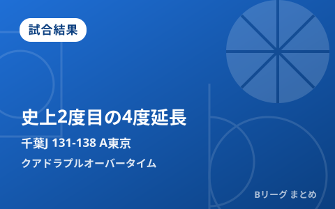

千葉J×A東京、開幕戦がBリーグ史上2度目のクアドラプルオーバータイムに もつれた60分をA東京が138-131で制す

10月2日、千葉ジェッツの2026-27シーズン開幕戦（ららアリーナTOKYO-BAY）として行われたアルバルク東京戦は、4度の延長戦「クアドラプルオーバータイム」にもつれ込む歴史的な一戦となりました。B1優勝経験を持つ両クラブによる新リーグ「B.PREMIER」初対戦は、通算60分間に及ぶ死闘の末、アルバルク東京が138-131で勝利。クアドラプルオーバータイムはB.LEAGUE史上でも2025年11月30日のB2福島ファイヤーボンズ対ライジングゼファー福岡戦に続く2度目の記録で、トップカテゴリーのB.PREMIERでは初めてのケースとなりました。
最後まで決着つかず、4度の延長戦に
両チームは終盤までもつれる展開を繰り返し、通常の40分でも、続く延長1～3回でも決着がつかず、オーバータイム4（4度目の延長）までゲームがもつれ込みました。最終盤はアルバルク東京が残り1分28秒に安藤周人の3ポイントシュートでリードを4点に広げると、残り27秒には今季加入のディー・ジェイ・ホグが、古巣・千葉ジェッツ相手に値千金の長距離シュートを沈め、追撃をかわし切りました。最終スコアは千葉ジェッツ131-138アルバルク東京。両クラブにとって新リーグ初対戦が、いきなりリーグ史に残る大激闘となりました。
| 項目 | 内容 |
|---|---|
| 日時 | 2026年10月2日（金）19:05開始 |
| 会場 | ららアリーナTOKYO-BAY（千葉ジェッツ 2026-27開幕戦） |
| 最終スコア | 千葉ジェッツ 131 － 138 アルバルク東京 |
| 延長回数 | 4度（クアドラプルオーバータイム） |
| 決着までの時間 | 延長込みで約60分間 |
勝利のアルバルク東京、新加入勢が躍動
勝利したアルバルク東京は、夏の補強で加入した外国籍選手が激闘を支えました。報道によると、オルブリッチが33得点14リバウンド6アシスト、キヨンテ・ジョンソンが29得点12リバウンド5アシスト2スティール、そして古巣対決となったディー・ジェイ・ホグも24得点5リバウンドと活躍。終盤の競り合いを制した安藤周人の3ポイントも含め、チーム一丸での勝利となりました。
| 選手（アルバルク東京） | 成績 |
|---|---|
| オルブリッチ | 33得点・14リバウンド・6アシスト |
| キヨンテ・ジョンソン | 29得点・12リバウンド・5アシスト・2スティール |
| ディー・ジェイ・ホグ | 24得点・5リバウンド |
Bリーグ史上2度目の「クアドラプルオーバータイム」
4度の延長戦に及ぶ「クアドラプルオーバータイム」は、B.LEAGUEでは極めて稀な記録です。最初の事例は2025年11月30日、B2の福島ファイヤーボンズがライジングゼファー福岡を120-114で下した一戦で、このときはクラブ記録となる17連勝がかかった試合でした。それから約10カ月、今回の千葉J対アルバルク東京戦が通算2度目のクアドラプルオーバータイムとなり、新設のトップカテゴリー「B.PREMIER」では初の記録となりました。
開幕から波乱含みのB.PREMIER
9月22日に開幕した新リーグ「B.PREMIER」は、開幕週から各地で接戦が相次いでいます。千葉ジェッツは夏にウィリアムス・ニカを獲得するなど補強を進めてきましたが、開幕戦でいきなりリーグ史に残る激闘を経験する形になりました。夏の移籍模様は8月の移籍まとめ記事で、新リーグの概要はB.PREMIER開幕記事でそれぞれ整理しています。当サイトでは今後も、各節の注目カードや速報をお届けします。
Q. 「クアドラプルオーバータイム」とは？
A. バスケットボールで4度目の延長戦（オーバータイム4）に突入した試合を指す呼び方です。延長は1回5分で、同点のまま次の延長に入るたびに回数が増えます。4度延長は国内公式戦でもごく稀なケースです。
出典：バスケットボールキング「アルバルク東京が60分間の大激闘を制す…千葉ジェッツとのBプレミア初対戦は歴史に残る一戦に」／BASKET COUNT「Bリーグ史上2度目のクアドラプルオーバータイムに突入、アルバルク東京が千葉ジェッツとの死闘を制す」／B.LEAGUE公式「4度延長“クアドラプルオーバータイム”の激闘…B2福島が福岡を破り、クラブ記録更新の17連勝達成」ほか
https://basketballking.jp/news/japan/20261002/635780.html
https://news.yahoo.co.jp/articles/fb3a1ea5448ac8323ce575cb4d5e0fcd23abd18e
https://www.bleague.jp/media_news/detail/id=542824
https://chibajets.jp/lp/game_20261002_20261004/